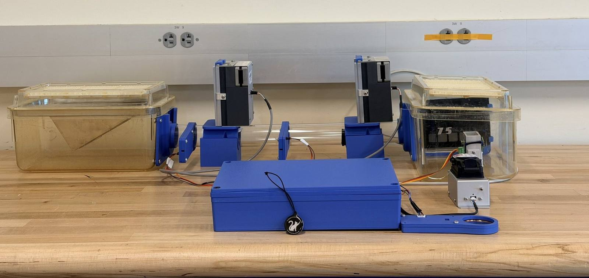

The problem
Mice used in cognitive research are usually housed alone so each one can be trained on its own schedule. That isolation stresses the animals and shifts their neurological baseline, which muddies the very behavioral data the studies depend on.
Our sponsor, the Jared Young Lab in UC San Diego's Department of Psychiatry, wanted a way to keep mice group-housed and still run controlled training. The team built an enclosure where mice live together and reach an automated touchscreen trainer through an RFID airlock that only lets one identified mouse in at a time. It runs the lab's 5-Choice attention task automatically and aims to cut the training timeline from the usual 5 to 6 months down to about 10 to 15 days.
What I built
I owned the software side of the project. The original design ran everything on the microcontroller; I moved the brains onto a small lab computer (an Intel NUC) so the training logic lives in Python and can be changed without re-flashing hardware. The touchscreen controller became a simple peripheral that just takes commands.
Operator dashboard
static/index.html
The browser interface the lab actually uses: live per-mouse status, RFID reads lighting up each antenna, gate controls, and a running event log. Designed and built from scratch.
Supervisory server
bridge.py · Flask
The NUC "brain." Serves the dashboard, streams live events to it over SSE, talks to the microcontroller over USB serial, and owns the mouse roster and schedule.
Training state machine
cycle.py
Runs one full training cycle per mouse and steps through every stage. It is created for one specific RFID tag and silently rejects any other mouse at every step.
Scheduler + logging
scheduler.py
Opens each mouse's daily session window automatically, then writes per-trial CSVs, per-session summaries, and a raw event log for the researchers.
How it fits together
Operator dashboard
What the researcher sees and clicks. Updates live as events stream in.
Python bridge
Decides what runs and when. Holds the schedule, the state machine, and the logs.
STM32 peripheral
Drives the RFID readers, the airlock gates, the touchscreen, and the reward pump.
Tech
Gallery



More
Want the full engineering story, including the hardware side my teammates built (the RFID readers, the guillotine-gate airlock, power, and enclosure)?